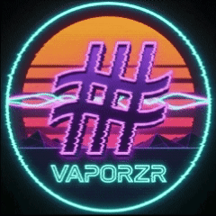

🧷
🙈
–
×
×
▶️ YOUTUBE
starting…
Nothing playing
0:00 / 0:00
⏮
▶
⏭
🔀
🚫
↩
✨
🎲
🛣
🔉
VISUAL
🎚
⏱
🌙
🔓
🔎
📊
📱
🎚
📣
💥
📈
↩️
💣
⚡
👏
🔟
Space play/pause · S shuffle tracks · P next visual · R shuffle visual · B back · E synthwave · ↑↓ volume · ←→ seek · Alt+←→ track · Esc hide · H chrome
🎛